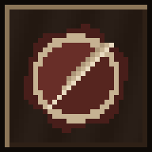

Uit je hoofd
Het Bord
📲 App
⚙
Prik op bord
Naar boek
Lakzegel
↶ Terug
Kist
JOUW ZET
Nu doen
+ Achtergrond & voorgeschiedenis
● Zeker belangrijk
·
○ Lekker belangrijk
Lakzegel erop (Klaar)
🔥 Weg
Dinsdag
Sluit
Instellingen & Koppeling
Sluit
📲 Installeer als losstaande App
Ganzenveer-tikgeluid bij schrijven
Aan
Hout-, vuur- & papiergeluidjes
Aan
Honor Fold Tweeluik
Auto
Raampje sfeer:
Gedempt / Helderder
Live Alkmaar
Nacht
Dag
Regen
GitHub Token (vindt je kluis-repo automatisch!)
GitHub Repository (wordt automatisch ingevuld als je hem leeg laat)
Claude API-sleutel (voor het Redigeer-veertje & briefjes)
Bewaar
Koppel & Haal op
📲 Als vaste App op je telefoon
Sluit

Werkplaats Mobiel
draait als losstaande app (zonder adresbalk) met dit 16-bit icoon op je Honor startscherm.
Zo zet je hem vast op je scherm:
Tik rechtsboven in Chrome op de drie puntjes
⋮
Tik op
Toevoegen aan startscherm
(of
App installeren
)
Kies
Installeren
— hij staat nu als vaste unit tussen je apps!
Begrepen